01Case Study
RYUJIN
Forged in Silence
An online store for handmade katana, built to sell the craft the way it deserves, without cheapening it.

02The Challenge
Luxury objects lose meaning online.
Most stores are built to move units, not to earn respect. I wanted the opposite: a quiet, self-assured space that treats each blade like the object it actually is.
03Our Approach
Design as discipline.
I stripped it back to hierarchy and pacing. Every interaction is tuned to slow you down a beat, so the product earns your attention instead of demanding it.
- Clarity over clutter
- Purposeful transitions
- Craft at the center
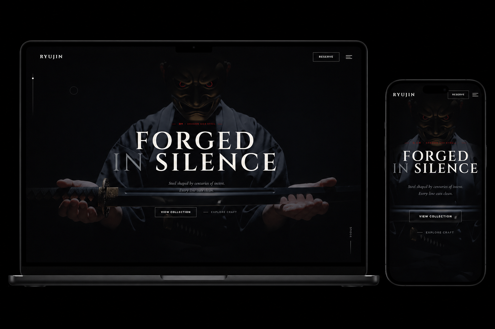
04The Solution
A storefront that feels like the craft itself.
A pared-back storefront that keeps the materials and the making up front, and guides people by intent instead of pressure.
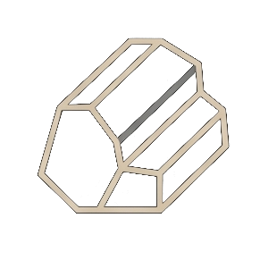
RemoveNoise
Pacing
First
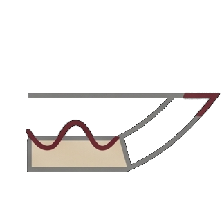
MindfulDetail

05User Journey
A calm, visual landing page opens with the philosophy and the heritage behind it.
Collections are laid out with clarity and respect for the craft.
The details, materials, and craftsmanship earn trust as you read.
Configuration lets people build the piece they actually want.
A careful checkout and unboxing close it out.
06Impact by Design
The point was simple: careful design changes how something is seen. Treat a product like it matters, and people start to feel that it does.
- A calm, focused experience that builds respect for the brand
- Clear hierarchy that keeps the product at the center
- Interactions that feel deliberate, never rushed
- A design system that keeps things consistent and easy to scale
07Blade Anatomy
Every part
earns its place.
A look at the parts of a katana, each one shaped by function, balance, and centuries of refinement.
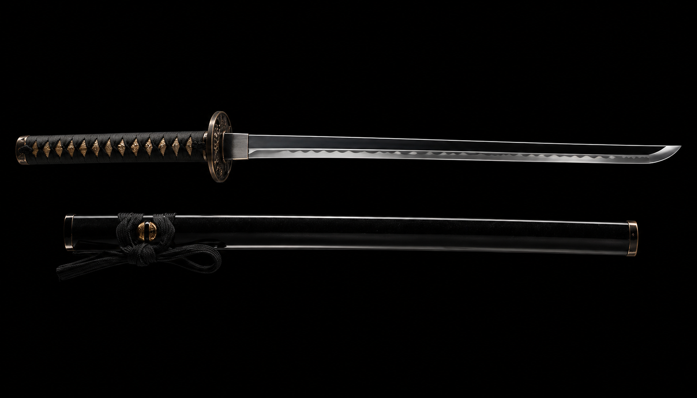
柄 鍌 刃 切先 鞨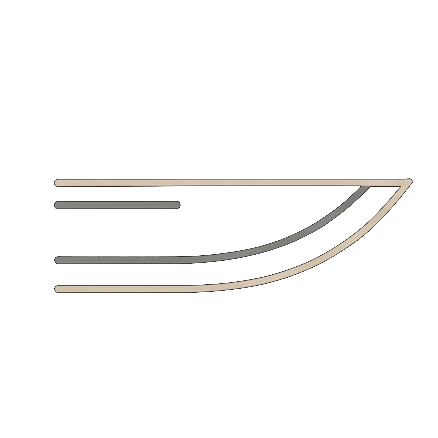
Blade Edge
The sharpened edge, honed for precision and a clean cut.
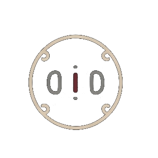
Guard (Tsuba)
Protects the hand and sits at the sword's balance point.
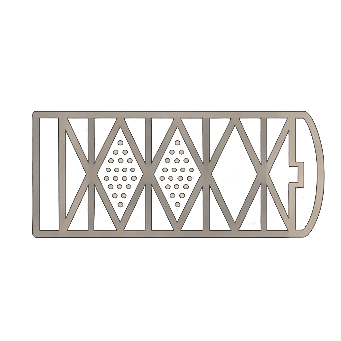
Handle Wrap (Tsuka)
Wrapped for grip and control, the link between the hand and the blade.
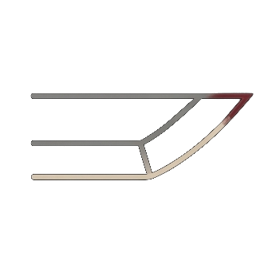
Blade Tip (Kissaki)
The point of the blade, designed for piercing with strength and accuracy.
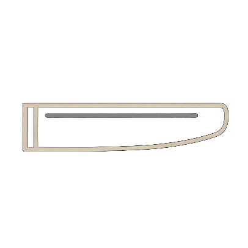
Scabbard (Saya)
Protects the blade and shows the care its owner puts into it.
08The Forging Process
From raw steel to living legacy.
A katana comes out of fire, pressure, and patience, shaped by hand rather than by machine.
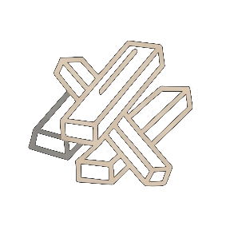
TamahaganePure steel is selected for strength and purity.
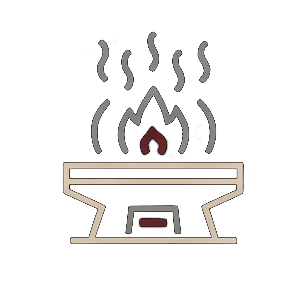
HeatingSteel is heated to extreme temperatures until glowing.
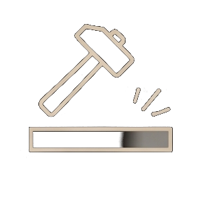
HammeringThe steel is hammered to remove impurities and shape the blade.
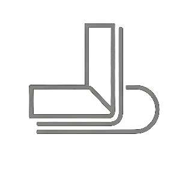
FoldingFolded over and over to build strength, flex, and grain.
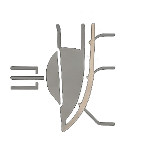
Clay QuenchClay is applied and the blade is quenched to harden the edge.
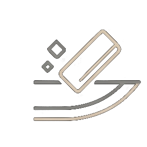
PolishingThe blade is polished to reveal its beauty and hamon.
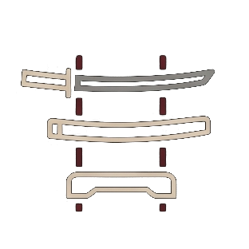
AssemblyThe blade is fitted with handle, guard, and finishing.
Every detail is checked for both form and function.
09Design System
System
foundations.
RYUJIN's visual language is built on clarity, precision, and restraint, and the system keeps that consistent across the whole interface.
Typography
Base Size16px
Base Line Height25.6px
ScaleSizeSample
xs9.6pxThe quick brown fox
sm9.92pxThe quick brown fox
md10.4pxThe quick brown fox
lg10.88pxThe quick brown fox
xl12.8pxThe quick brown fox
2xl13.12pxThe quick brown fox
3xl12.33pxThe quick brown fox
4xl13.6pxThe quick brown fox
H1 Heading
Fraunces / 48px / 120%H2 Heading
Fraunces / 32px / 130%H3 Heading
Fraunces / 24px / 130%
Body Large
Inter / 16px / 160%
Made to bring that physical mastery into a controlled digital form.
Body Small
Inter / 13px / 160%
Subtle captions and supporting information.
Colors
Surface
surface.base#000000
surface.muted#060608
surface.strong#06060a
Text
text.secondary#6f7378
text.tertiary#9a9fa5
text.inverse#c8c4be
Border
border.default#f2eee8
accent.kanji#7a1111
accent.signal#ff1f1f
Spacing Scale
space.14px
space.24.8px
space.38px
space.48.8px
space.59.6px
space.611.2px
space.712.8px
space.814.4px
Motion
Instant
300ms
State changes that need to read right away.
Fast
400ms
Quick transitions and micro-interactions.
Normal
500ms
Most UI transitions and content reveals.